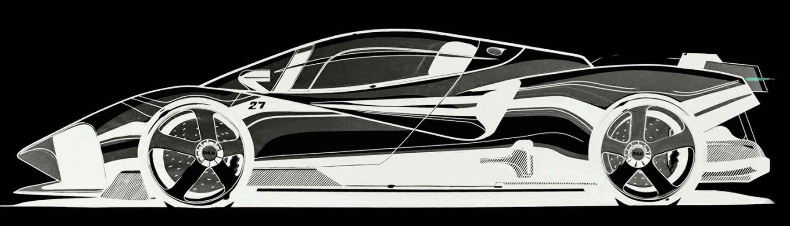
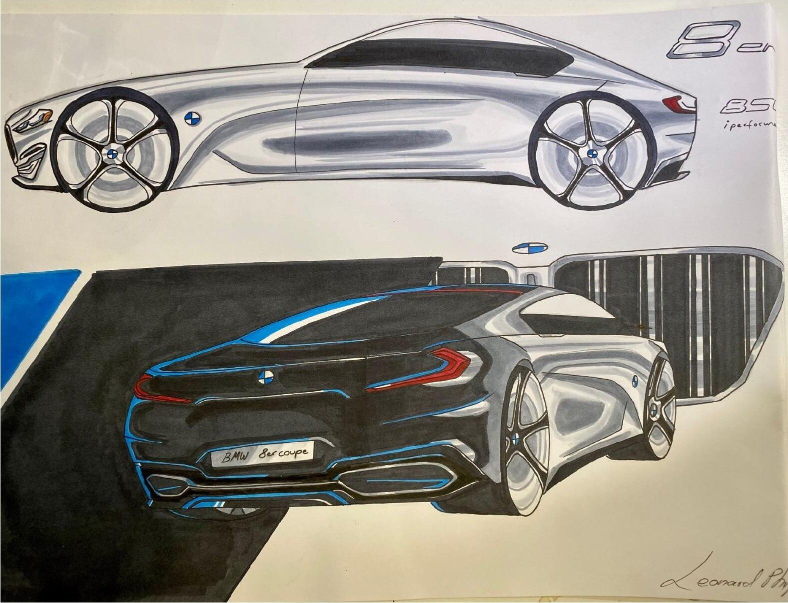
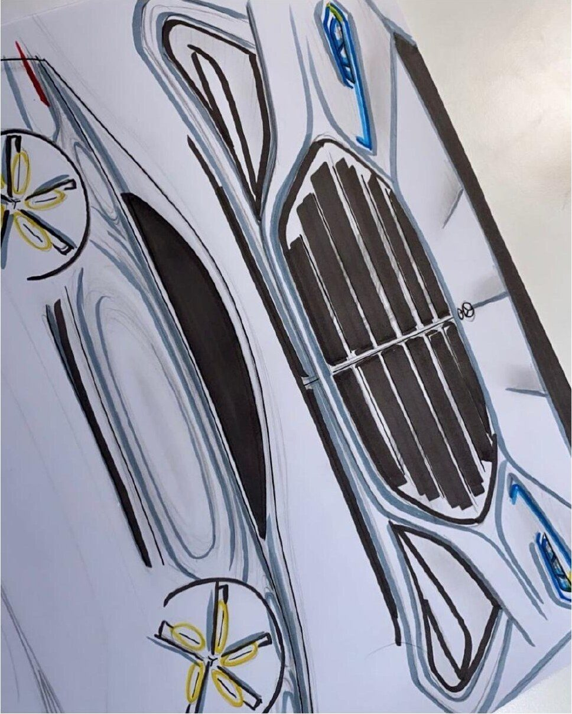
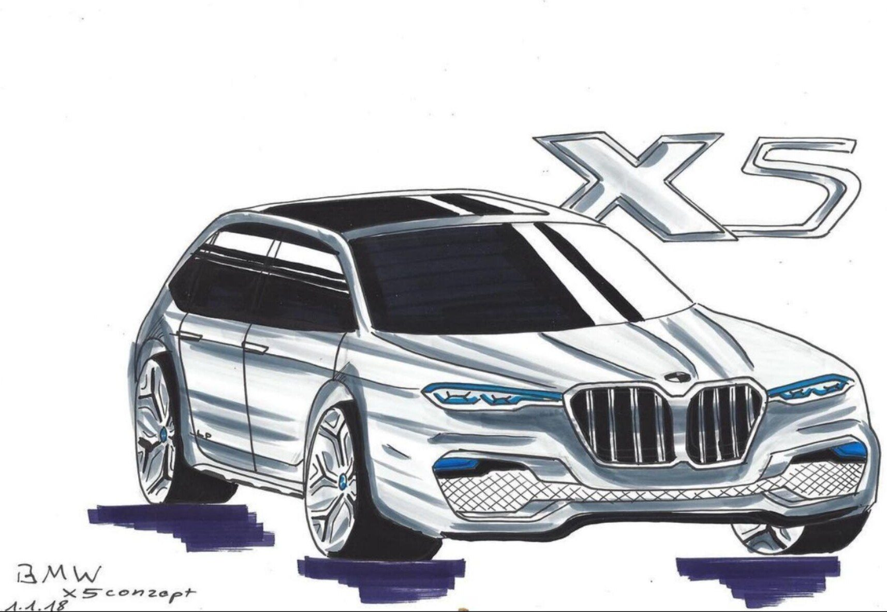
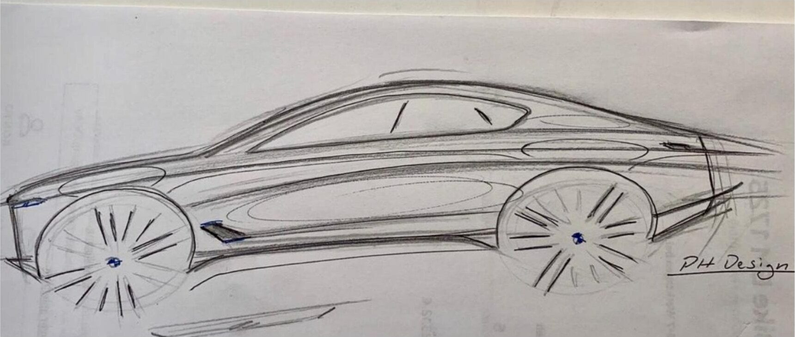
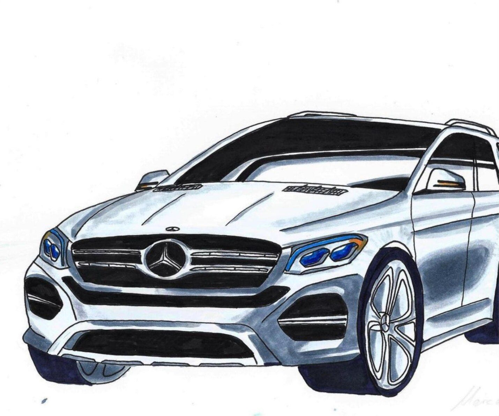
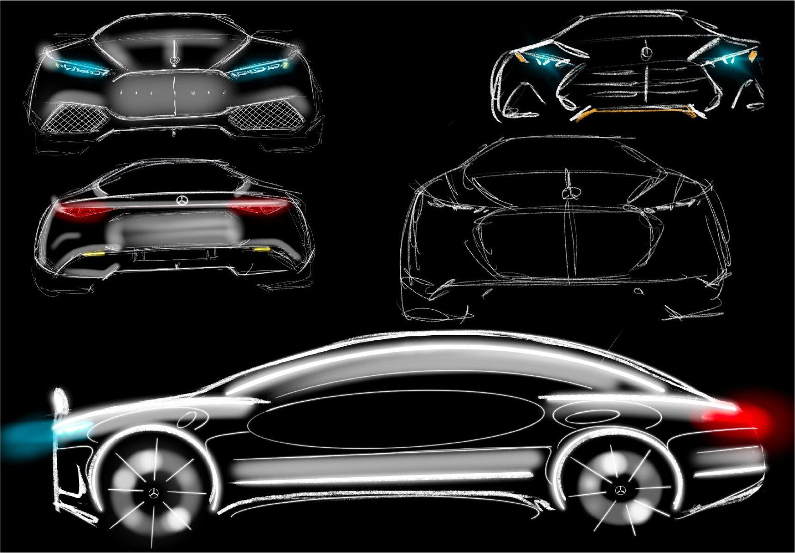

Sketch gallery
Car sketches from recent years, drawn digitally and by hand: studies of proportion, stance, surfaces and light signatures. Media: digital, marker, pencil (Photoshop, Procreate).
Marker & pencil sketches









Digital sketches


